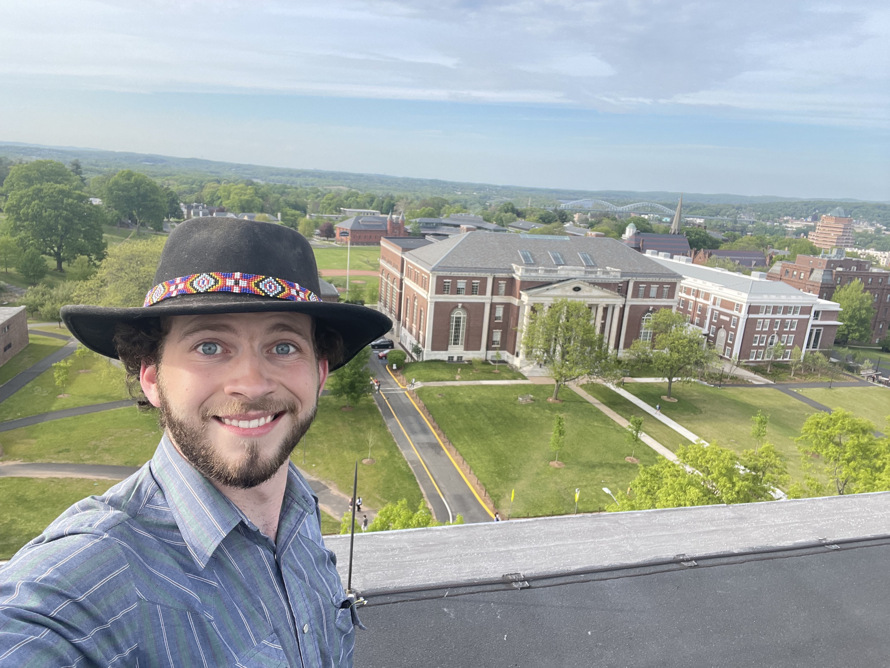

Ford McDill is a Wesleyan student graduating this coming spring. He is focused on mathematics
as well as computer science. In keeping with the trend of the American college student at Wesleyan
University, he has created this website as a way to document and remember the most important parts of
his life. If you or anyone you know would like to contribute or help out in any way, his address is
215B Pine Street. Write him a letter, knock on his door, send him a pigeon. He'll get back to you.
